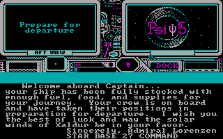
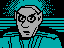
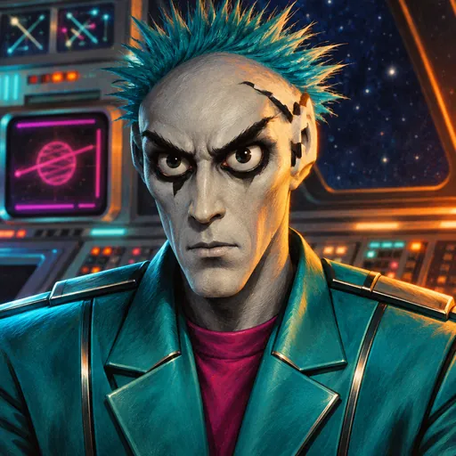
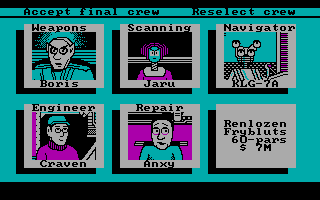
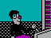
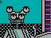
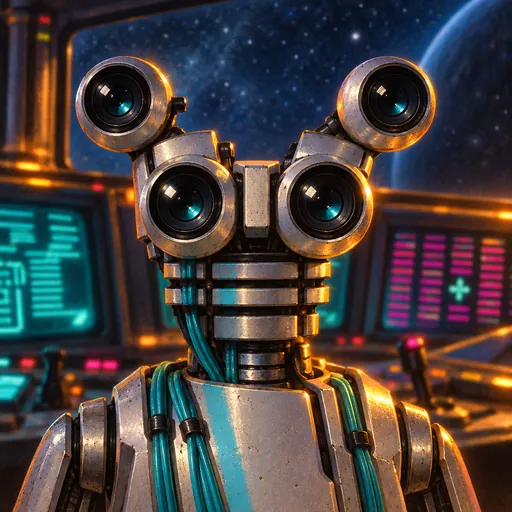
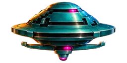

Игра 1986 года, в которой капитан никогда не держит штурвал. Разбираем её до последнего байта: часы на 120 герц, генератор случайности без зерна, раздача энергии «по очереди», четыре бага, из-за которых пушки почти не стреляли, — и как боты помогли починить баланс через сорок лет.
Psi 5 — странная и умная игра: вы командуете кораблём, но всё делают другие.
Грузовой корабль «Пси-5» должен довезти груз через Парвинское пограничье, где орудуют пираты. Перед рейсом вы выбираете курс (четыре варианта, от короткого и дешёвого до длинного и опасного) и пятерых офицеров из тридцати кандидатов — по шесть на каждую должность: канонир, оператор сканеров, штурман, инженер и ремонтник. У каждого резюме: возраст, раса, характер, сильные и слабые стороны.
Дальше начинается главное. Вы не летаете и не стреляете. Вы отдаёте приказы: «огонь из пушек по цели B, три залпа», «изучить контакт C в первую очередь», «скорость 4, манёвр уклонения», «щиты выше двигателей в очереди на энергию», «трёх дроидов на ремонт климата трюма». Офицеры выполняют их сами — быстро или медленно, хорошо или плохо, спокойно или в панике. Каждый ещё и разговаривает с вами в своей манере: от сухого робота-навигатора до штурмана с густым акцентом.

Эта статья — о том, как игра устроена внутри. Мы разобрали её целиком, написали её точную копию для браузера, потом — чистый современный движок, доказали, что он ведёт себя так же, как оригинал, нашли и исправили баги, а ботами подобрали баланс. Математики и алгоритмов внутри оказалось неожиданно много.
Две программы на Си 1985 года, свой эмулятор и сравнение памяти после каждого «вдоха» игры.
Игра — это две DOS-программы. SEL.EXE (71 КБ) показывает титульный экран, курсы и кандидатов и записывает выбор в маленький файл SELECT.BIN. PSI5.EXE (97 КБ) — сам рейс. Обе собраны компилятором Microsoft C 1.04: внутри так и написано, MS-C V 1.04. Компилятор почти ничего не оптимизирует, поэтому машинный код хорошо читается: каждая функция начинается с push bp, локальные переменные лежат в стеке по фиксированным смещениям. Кроме Си там много ассемблера: графика, звук, джойстик, генератор случайных чисел. Всего в PSI5 187 игровых функций — около 10 400 инструкций процессора 8086.
Обычный способ проверить копию — запустить оригинал в эмуляторе DOSBox и сравнивать кадры. Здесь это не работает: игра перепрограммирует системный таймер и живёт по его прерываниям, а время в DOSBox идёт по реальным часам. Одно и то же нажатие, сделанное на миллисекунду позже, даёт другую игру. Поэтому мы написали собственный эмулятор процессора 8086 и машины вокруг него — видеоадаптер CGA, таймер, контроллер прерываний, пищалку — с виртуальным временем.
Дальше — перевод в JavaScript. Порт хранит данные в точности там же, где оригинал: 64-килобайтный сегмент данных снят с настоящей программы в момент входа в main(), и каждая переменная живёт по своему исходному адресу. Это позволило сравнивать порт с оригиналом самым строгим способом: после каждой точки ожидания весь сегмент данных, видеопамять, таблица прерываний и состояние железа должны совпасть байт в байт.
Чтобы девять параллельно работающих агентов могли проверять свои куски по отдельности, мы сделали «гибридный» режим: ещё не переведённая функция выполняется как оригинальный машинный код прямо на памяти порта. И записали из реальных игр по десятку вызовов каждой функции, чтобы прогонять их через перевод. Итог — демо-миссия на 207 357 шагов и три сессии случайных нажатий по 95 тысяч шагов без единого несовпадающего байта.
Вся жизнь корабля — несколько вложенных счётчиков.
При старте рейса игра записывает в канал 0 системного таймера делитель 0x26D4 = 9940. Таймер тикает с частотой 1 193 182 Гц, значит прерывание приходит
Обработчик прерывания делает три вещи: двигает мелодию на пищалке, увеличивает несколько счётчиков и каждые 20 тиков добавляет один «долг» симуляции — 6 раз в секунду. Главный цикл, ожидая нажатия клавиши, отдаёт каждый долг одному из шести «слотов» по кругу:
Получается, что каждый отдел думает ровно раз в секунду, а игровая минута — это 60 шагов навигатора, то есть честная минута. Если игра отстала (например, на паузе), накопившиеся шаги отрабатываются по одному за опрос клавиатуры — но только если их не больше одиннадцати. Больший долг просто выбрасывается.
256 байт, которые крутятся по кругу.
Генератор случайных чисел — дюжина инструкций ассемблера. Он хранит таблицу из 256 байт и индекс. При каждом вызове индекс уменьшается на единицу, а выбранный байт сдвигается влево, и в освободившийся младший бит попадает инверсия старшего:
; f_7086: следующее «случайное» число 0..255 dec [idx] ; индекс по кругу 255, 254 … 0, 255 … mov al, table[idx] cmp al, 80h ; CF = 1, если старший бит равен 0 rcl al, 1 ; сдвиг влево, CF → бит 0 mov table[idx], al
Это счётчик Джонсона — «кольцо со скрученным концом». Каждый байт сам по себе проходит цикл из 16 состояний, а вся таблица повторяется через 256 × 16 = 4096 вызовов. Снаружи последовательность выглядит случайной, но генератор никогда не засевается: при каждом запуске таблица одна и та же.
Откуда же разнообразие? Пока на экране висит «Press RETURN», игра в цикле ожидания дёргает генератор. Сколько миллисекунд вы медлили перед нажатием, столько раз прокрутилась таблица. Это и есть зерно — ваша реакция. А демо-режим нажимает клавиши сам, без паузы, поэтому демо всегда разыгрывается одинаково. В римейке мы сохранили ровно этот механизм: момент вашего нажатия на «Начать рейс» по-прежнему определяет, как сложится рейс.
Пираты появляются не случайно — случайно только, когда именно.
Путь до цели — 50 позиций, каждая делится на 65 536 долей. Каждую секунду навигатор прибавляет к пройденному число из таблицы скоростей: от 552 долей на минимальной скорости до 1655 на максимальной. Значит, одна позиция занимает от 119 до 40 секунд. Есть пять курсов-полос — от «кратчайшего» до «полного вправо», и каждая полоса — это своя поправка к скорости.
Самое интересное — встречи. Файл миссии хранит для каждой полосы 50 шестнадцатибитных масок, по одной на позицию. Каждый установленный бит означает ровно один корабль заранее заданного типа. Когда корабль входит в новую позицию, сканер открывает окно на 32 секунды и на нечётных шагах пробует выпустить контакты: случайно выбирается только стартовое место в таблице и порядок. Пеленг и слабое место — ещё два броска на каждый контакт. Одновременно в небе не больше 16 кораблей.
| Курс | Позиций | Расписание | Награда |
|---|---|---|---|
| Ренлозен | 10 | 13 мин | 7 млн $ |
| Коззар-7 | 20 | 27 мин | 12 млн $ |
| Зипо-Ага | 35 | 44 мин | 30 млн $ |
| Сплайтё | 50 | 67 мин | 50 млн $ |
Опасность растёт с курсом: шанс нападения 40 → 128 из 256, шанс пробить щит 25 → 100 из 256.
Отсюда стратегия, о которой игра молчит: состав угроз на каждой полосе фиксирован, и опытный капитан может уходить с опасной полосы туда, где масок меньше. А пираты становятся враждебными, только когда корабль уйдёт достаточно далеко от места их появления, — поэтому стоящий на месте корабль они «не замечают».
Самая важная и самая неочевидная механика игры.
Два реактора дают по 300 единиц на каждую ступень исправности: целые — 1200. Аварийная батарея, пока заряжена, добавляет ещё 600. Потребители разбиты на шесть классов: щиты, оружие, двигатели, сканеры и две зарядки батарей. Инженер раздаёт энергию строго по очереди приоритетов, и тут скрыта ловушка: бюджет вычитается даже тогда, когда потребителю уже не хватило, и уходит в минус. Всё, что стоит ниже, остаётся без энергии целиком.
При заводских приоритетах двигателям на полном ходу не достаётся ничего, и корабль ползёт. Именно так проигрывает «пассивный» капитан — не в бою, а из-за энергии. Двигатель берёт свою базовую цену, умноженную на число единиц скорости (два двигателя × 100 × 4 = 800), повреждённая система потребляет больше обычного, а включение и выключение устройств идёт очередью с задержками из личного файла инженера.
Сканер не находит корабли — он узнаёт о них.
Контакты появляются по маскам маршрута сами, сканер ничего не «обнаруживает». Его работа — четыре этапа знания о каждой цели: захват (нужен оружию, чтобы стрелять), класс (свой или пират, и какой), повреждения и слабое место — тот тип оружия, против которого цель уязвима. Захват делается сразу для всех целей в списке, остальные этапы — по одной цели за раз, в порядке, который задаёт капитан. Скорость зависит от оператора: Майк делает захват за 3 секунды, Физо — за 14.
Знание класса важнее, чем кажется. Плата за рейс считает по настоящему классу цели, и за уничтожение своих — разведчиков и шаттлов — штраф. Стрелять по неопознанному «неизвестному» рискованно.
Почему в оригинале пушки почти никогда не попадали.
Попадание решает один бросок. У каждого канонира для каждого оружия есть «порог промаха» m (0–255). Выстрел попадает, если случайное число r больше порога:
У Бориса Таркова, например, пороги 35 / 13 / 40 / 35 для ракет, бластеров, пушек и термосов: попадание в 84–95 % случаев. Быстрая перезарядка в таблицах всегда идёт в паре с высоким порогом — это компромисс, заложенный в каждого канонира. На бумаге всё честно. А в коде нашлись четыре ошибки.
| Баг | Что в коде | Что в игре |
|---|---|---|
| Половина выстрелов | Цикл проверки попаданий кончается на jne вместо jns и никогда не смотрит слот 0 | Наши выстрелы занимают сначала непроверяемый слот: из 179 таких пусков — 0 сбитых |
| Глубина | Глубину сравнивают по номеру корабля, а не выстрела | Правильно поражается только корабль спереди: 15 сбитых на 22 пуска; сзади — 0 из 45 |
| Слабое место | При попадании «в слабость» порог промаха умножается на 4 (два shl) | Оружие, которое советует сканер, попадает хуже: ~45 % вместо ~86 % |
| Уклонение | При манёвре сравнение перевёрнуто: враг попадает, если r ≥ порога штурмана | Уклоняющийся корабль получает 71–92 % попаданий вместо 16–50 % |
Вместе эти ошибки делали бой почти бессмысленным: из всех выстрелов в цель уходило около 5 %, а самый «умный» приём — стрелять в слабое место и уклоняться — был самым вредным. Корабль при этом уничтожить нельзя вообще: пробившие щит попадания повреждают системы, портят груз, а под конец маршрута — убивают офицеров. Проиграть можно только деньгами и временем.
Где работа делится на бригаду, а не на рабочего.
У ремонтника семь дроидов. Повреждение системы измеряется в очках; одно очко — это 256 единиц работы. Каждую секунду бригада на задаче добавляет число из таблицы ремонтника, индексированной размером бригады. Ключевое слово — бригада: число общее, а не на каждого дроида.
| Энкси, дроидов на задаче | 1 | 4 | 7 |
|---|---|---|---|
| секунд на одно очко повреждения | 8,0 | 5,3 | 10,7 |
Отправить всех семерых на одну поломку медленнее, чем одного. После каждого освобождения дроид ещё и уходит на подзарядку. А когда уничтоженная система освобождала свой слот в очереди, счётчик занятых слотов не уменьшался — это порождало ложную «перегрузку ремонта» и задачи по несуществующим поломкам.
Характер в резюме — это несколько килобайт параметров.

1986
римейк
выбор экипажа, 1986Файл каждого кандидата (3–5 КБ) — чистые данные: таблица реплик, блок параметров и анимация лица. Черты из резюме выражены только числами. «Быстрая реакция» у канонира — короткая перезарядка, «плохо с бластерами» — высокий порог промаха для бластеров, «не выносит стресса» — низкий предел нагрузки.
Стресс — общая для всех механика. У каждого офицера есть пределы: сколько целей в списке, сколько задач в очереди, сколько полученных попаданий он выдерживает. Превысив предел, офицер переключается на вторые значения каждой пары «нормально / в стрессе»: другие пороги, задержки, скорости работы. Лицо на экране меняет анимацию. Если офицер погибает, его отдел переходит на урезанное меню: например, вместо гибкой очереди приказов огня остаётся одна команда «огонь всем».
Счёт-фактура как итог всей стратегии.
Рейс заканчивается одним из трёх способов: прибытием на 50-ю позицию, потерей всего груза или опозданием больше чем на час. Каждая минута сверх расписания стоит процента груза. Итог считается в десятых долях миллиона:
груз = награда × состояние_груза% / 10 (только при прибытии) досрочно = база_бонуса + (расписание − время) (если не опоздали) награды = Σ по типам пиратов: цена × сбито итог = груз + досрочно + награды − себестоимость_груза − 1,0 млн × погибших_офицеров − 1,0 млн × сбитых_своих − ремонт (уничтоженные + выведенные_из_строя / 4)
В формуле тоже нашёлся баг: сумма наград за пиратов никогда не обнулялась, и при «Повторить с тем же экипажем» награды прошлых рейсов приплюсовывались к новому.
Как понять, что исправленная игра стала лучше, а не просто другой.
Сначала мы написали чистый движок — без адресов памяти, с понятными именами — и доказали, что в «оригинальном» режиме он совпадает с портом: целые миссии, сотни тысяч тиков, одинаковая плата за рейс до цента. Потом каждый баг получил флаг исправления, а ботов мы научили играть, глядя только на то, что видит игрок: пассивный, наивный, грамотный, агрессивный, осторожный и «уклоняющийся». Они сыграли 27 112 рейсов на всех курсах со всеми экипажами.
| Стратегия | Оригинал: доходит | плата | Римейк: доходит | плата |
|---|---|---|---|---|
| пассивная | 15 % | −3,9 млн | 21 % | −2,7 млн |
| грамотная | 61 % | 5,8 млн | 88 % | 30,0 млн |
| с уклонением | 53 % | 1,6 млн | 97 % | 35,1 млн |
Выводы получились интересными. Решающее исправление — проверка глубины: доля попаданий на выстрел выросла с 5 % до 45 %. Исправленное уклонение заработало так, как, видимо, задумывал автор: медленный робот KLG почти неуязвим (враг попадает в 15 % случаев), быстрый Ник — заметная мишень (50 %). Но если уклонение ничего не стоит по скорости, уклоняться выгодно всегда, — поэтому в римейке оно снижает шанс попадания врага в зависимости от штурмана и по-прежнему замедляет ход. Исправление «двойного» вражеского огня ботов наказывало, и общий шанс попадания врага в римейке умножен на 0,6. Самый длинный курс в оригинале был непроходим — 0 % доходов при любой стратегии; теперь 53–88 %.
Две версии одной игры.

Айму, 1986
KLG-7A, 1986
KLG-7A, римейк
пират, римейкТеперь у игры есть две версии, и обе работают в браузере. «Оригинал 1:1» — та же программа 1986 года, переписанная на JavaScript байт в байт, со всеми багами, CGA-графикой и пищалкой. Римейк построен на проверенном движке: все ошибки исправлены, баланс подобран ботами, интерфейс работает с мышью и пальцем на телефоне, есть учебный рейс и подсказки. 1247 строк — резюме, реплики тридцати офицеров со всеми акцентами, — переведены на русский. 132 картинки нарисованы заново в стиле обложек фантастики восьмидесятых, но лицом к лицу с оригинальными спрайтами: тот же Борис с бирюзовым ёжиком, тот же диск пирата.
А самое приятное открытие — насколько продуманной оказалась игра 1986 года под своими багами. Компромисс «скорость против точности» у каждого канонира, предопределённые маршруты с секретом, офицеры, которые ломаются под нагрузкой, энергия, которую надо делить, — всё это было там с самого начала. Нужно было только дать пушкам наконец стрелять.